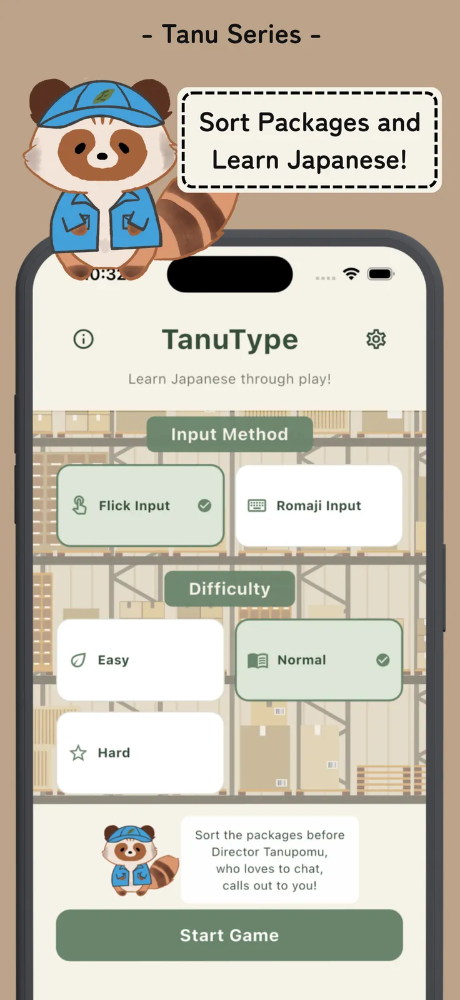
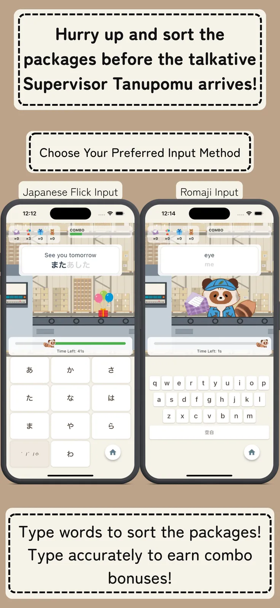
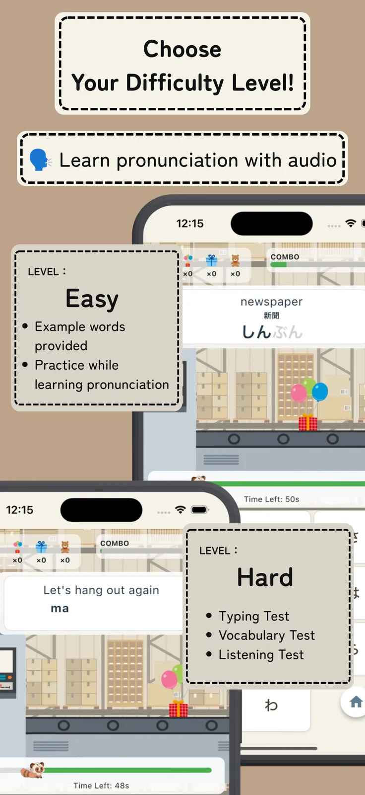
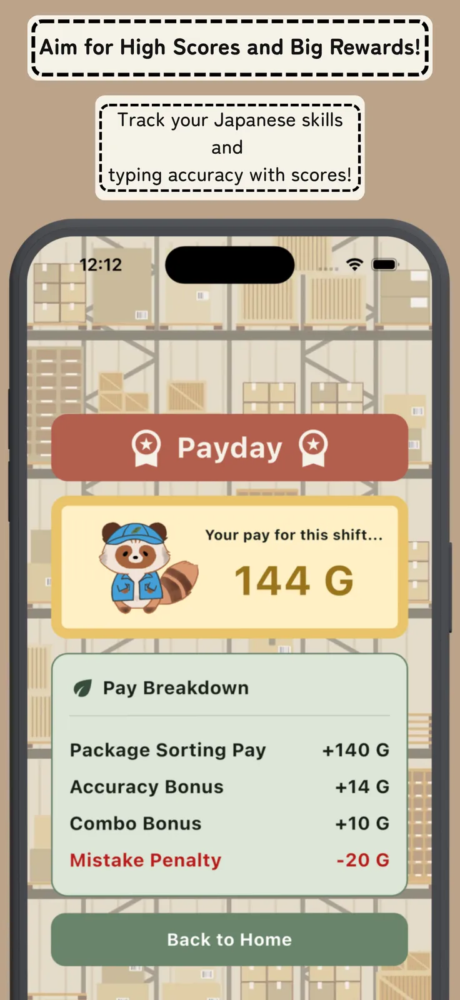
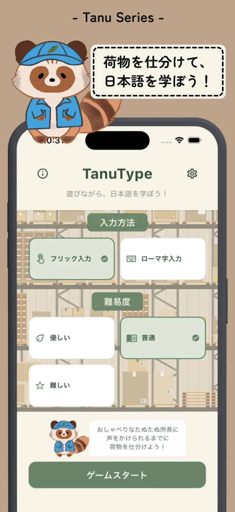
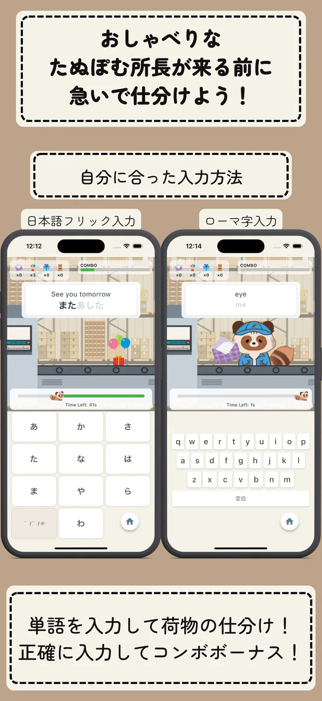
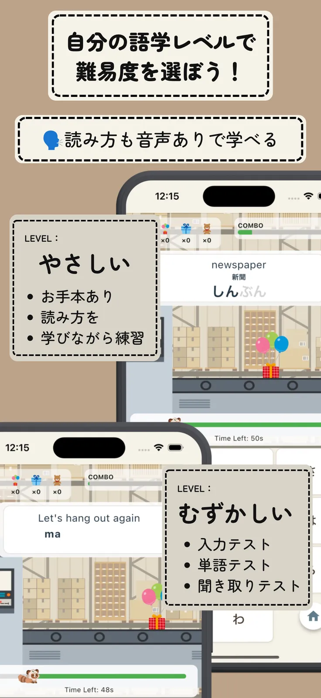
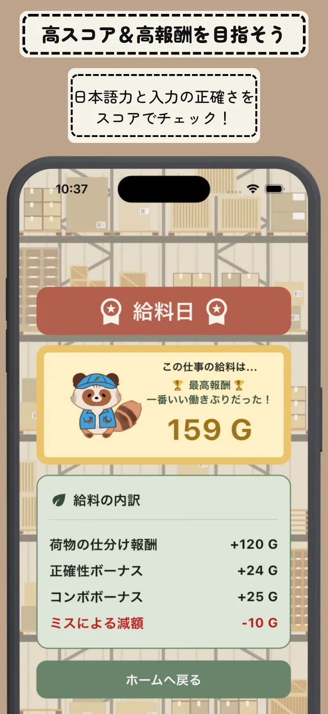

Created by Tanu
TanuType
Make Japanese Learning More Fun!




Learn Japanese through play, together with Tanupomu!
Want to learn Japanese, but feel like it might be too difficult to get started? Why not start with a game? Answer questions, sort packages, and have fun practicing Japanese along the way!
楽しく学ぼう、日本語の文字。




たぬぽむと一緒に、遊びながら日本語を学ぼう！
日本語を勉強してみたいけれど、なんだか難しそうで、なかなか始められない……そんなふうに思っていませんか？ まずはゲームから始めてみませんか？ クイズに答えたり、荷物を仕分けたり、ゲームを楽しみながら、自然と日本語に親しんでいきましょう！